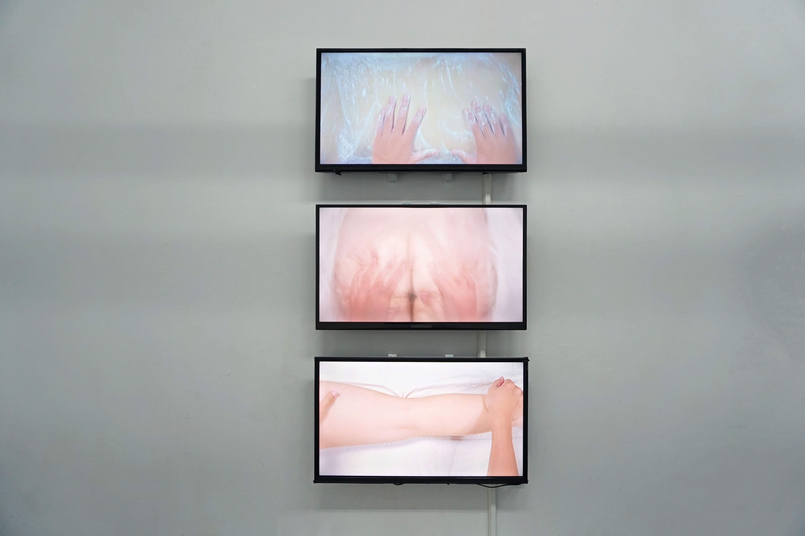

身體界線對我來說是，探索自我之後得出的結果和規則，也很像是一個範圍，會依照這個規則和人相處。 在麵團來回滾動、按壓，反覆的重複動作像是在探求某種平衡。揉麵時用力、麵團的筋性，像是在抵抗又有一點順從或者其實是無奈，反應身體界線像在不斷地被試探。
身體習作

▲ 點擊照片 觀看作品紀錄



▲ 點擊照片 觀看作品紀錄
身體界線對我來說是，探索自我之後得出的結果和規則，也很像是一個範圍，會依照這個規則和人相處。 在麵團來回滾動、按壓，反覆的重複動作像是在探求某種平衡。揉麵時用力、麵團的筋性，像是在抵抗又有一點順從或者其實是無奈，反應身體界線像在不斷地被試探。